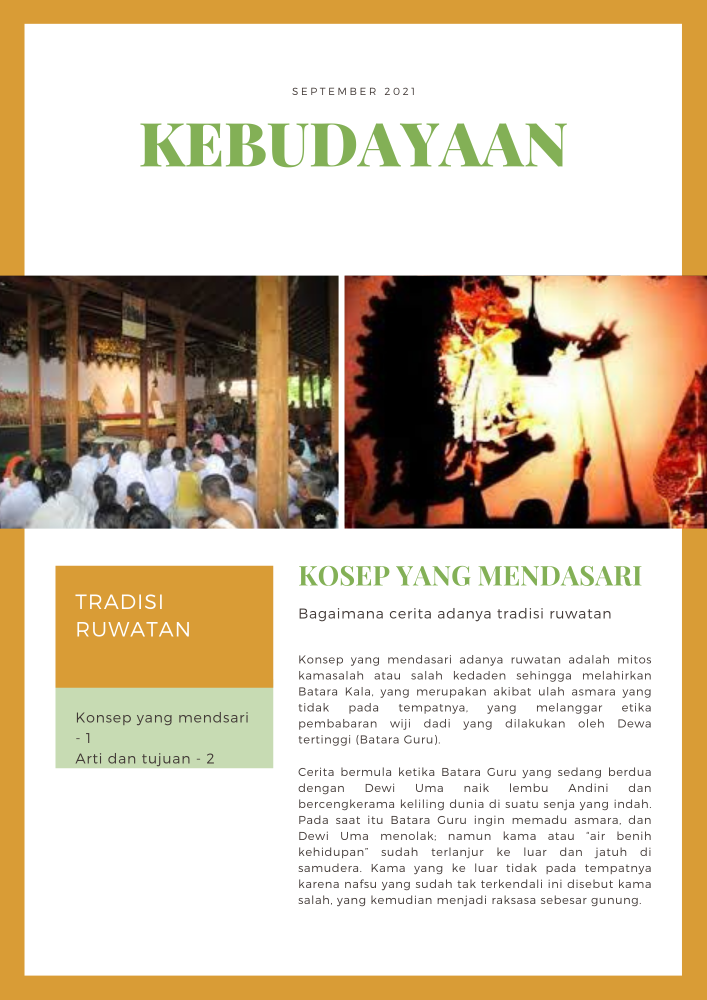
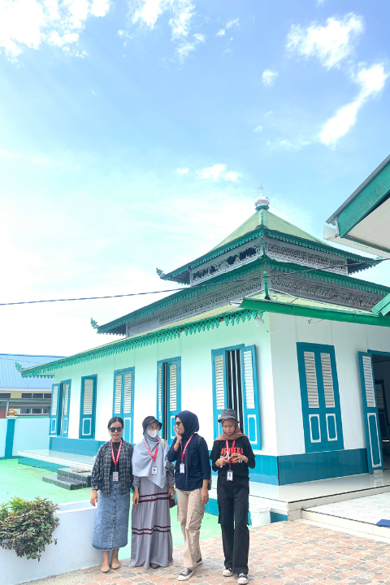
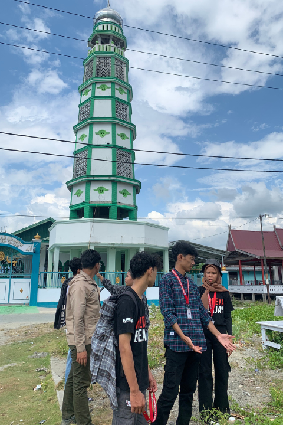
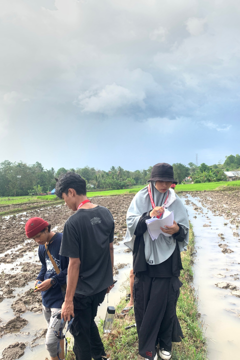
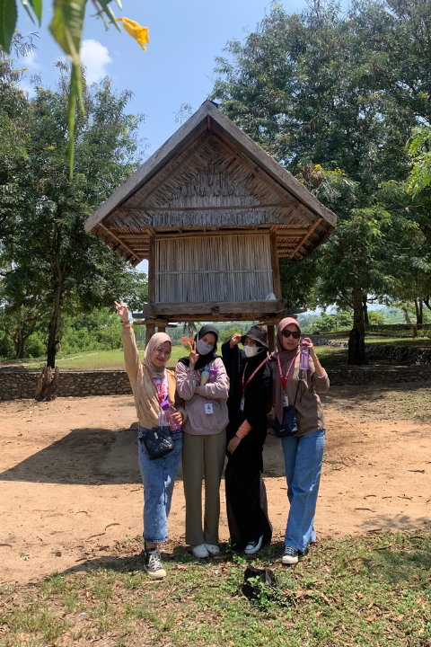
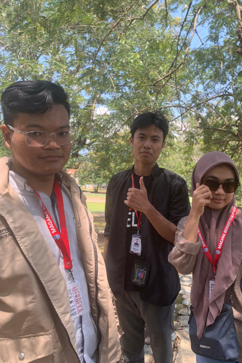
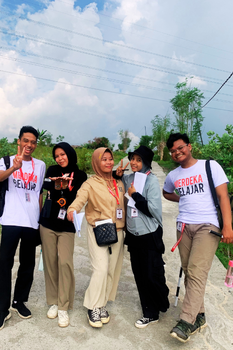
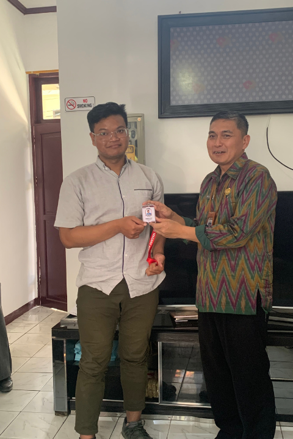

Welcome
To My Archive Project
This web contains projects that I have created


About

Safin Karunia Rojuli
A recent history graduate with a passion for learning and an enthusiastic approach to new opportunities. During his studies, he worked on various research projects, sharpening his analytical skills and his ability to evaluate historical sources. Beyond academics, he volunteered with different organizations and interned at institutions related to history and culture, broadening his perspective and enhancing his communication, project management, and teamwork abilities.
Now, as he steps into the professional world, he's eager to take on new challenges in fields like education, research, or any sector that values a deep understanding of history and strong analytical skills. His excellent interpersonal skills and collaborative nature make him a great addition to any team.
Project
Arcgis Story Map Donggala Heritage
The website offers a comprehensive overview of Cultural Heritage Sites and potential heritage sites in Donggala Regency, Central Sulawesi. An interactive map allows users to visualize the geographical distribution of these valuable assets.
Video Dokumentar Donggala Heritage
The historical development of Donggala Old Port in Donggala Regency, Central Sulawesi, from the early 20th century to the present.
Dulu, Kini, dan Nanti: Kisah dari Kampung Peneleh
This is story about "Kampung Peneleh" at Surabaya. This old village has been inhabited since the Dutch East Indies government.
Ruwatan

"Ruwatan" is deeply rooted in Javanese culture and belief systems, often associated with spiritual purification and protection from negative influences. The categories of individuals listed are based on specific birth orders, gender combinations, or unfortunate incidents that are believed to carry negative spiritual connotations
Gallery






